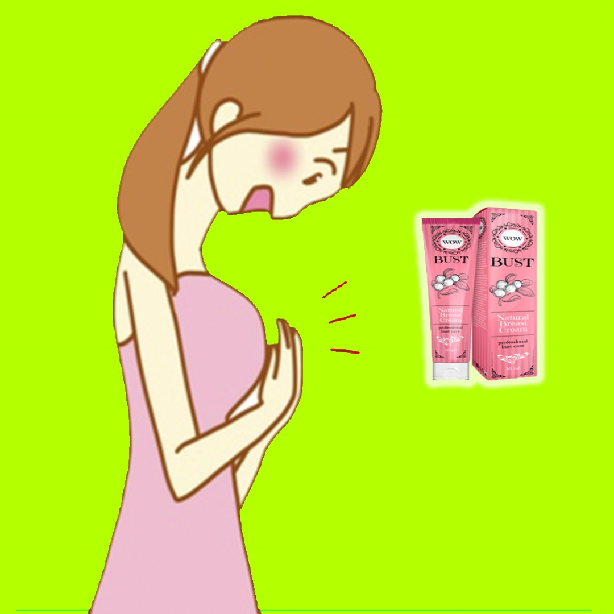

8 reglas para senos sanos
1. Proteja su pecho de lesiones. Incluso un pequeño golpe puede provocar problemas graves. Por ello, es necesario llevar el cinturón de seguridad mientras se conduce, comportarse con cuidado en lugares concurridos, para evitar lesiones durante la actividad deportiva. Un pequeño hematoma desaparecerá en una semana; los problemas graves pueden aparecer mucho más tarde. En el sitio del impacto, se forma un sello, que degenera fácilmente en un tumor maligno. 2. No te dejes llevar por el bronceado El solárium y el sol pueden desencadenar el crecimiento de tumores cancerosos. Si estás deprimido por estar pálido y no estás listo para renunciar a un bronceado ligero, cúbrete el pecho con dispositivos especiales de protección en un solárium, y sal al sol antes de las 12 o después de las 17 horas, después de aplicarte una crema protectora. 3. Controle su dieta Es recomendable incluir alimentos ricos en vitamina C en la dieta diaria: limones, kiwi, pimientos morrones, col. Y también consuma regularmente zanahorias, tomates, eneldo y espinacas, que contienen vitamina A, lo que aumenta la resistencia antitumoral. Los aceites vegetales y los cereales contienen vitamina E, previenen la aparición de tumores y ralentizan el proceso de envejecimiento. El oligoelemento selenio juega un papel importante en la prevención del cáncer de mama. Es capaz de acumularse selectivamente en las células tumorales y prevenir su actividad destructiva. Por lo tanto, incluya semillas, ajo, camarones y pescado en su dieta. 4. Deshazte de los malos hábitos Los senos sanos requieren dejar no solo los cigarrillos y el alcohol, sino también una taza extra de café. Lo máximo que puede pagar es una copa de vino tinto en el almuerzo o la cena. El resto es riesgo innecesario. 5. Dar a luz a un bebé Los médicos mamólogos dicen que tener un bebé y amamantar tienen un efecto beneficioso sobre la salud del busto. Con el nacimiento de un bebé, el riesgo de desarrollar cáncer de mama disminuye en un 7%, según la Fundación Británica de Investigación del Cáncer. Cada año de alimentación natural reduce la posibilidad de aparición de enfermedades en un 4,3% adicional. 6. Compra el sostén adecuado Hay varias reglas a seguir al elegir el sostén adecuado. Primero, los senos deben llenar completamente la copa. En segundo lugar, no abuse de las "flexiones": este modelo, sin duda, se ve impresionante, pero inevitablemente interrumpe la circulación sanguínea. En tercer lugar, evite las tiras apretadas que cortan los hombros y dejan marcas. Los mamólogos dicen: cuanto más anchas son las correas, más uniformemente se distribuye el peso de las glándulas mamarias. 7. Hágase un autoexamen Averigüe si las mujeres de su familia han tenido problemas en los senos. Si la respuesta es sí, asegúrese de dominar las técnicas de autoexamen. Se recomienda realizarlo una vez al mes los mismos días. Es necesario palpar con cuidado el seno para detectar a tiempo la presencia de focas, nódulos, sensaciones dolorosas y asperezas en la piel. El autoexamen de la mama se puede realizar: Acostado. Coloque una almohada debajo de su omóplato derecho, levante la mano por encima de la cabeza. Con un movimiento circular con una ligera presión, primero examine el seno derecho y luego el seno izquierdo (con los dedos de la mano izquierda): desde los bordes del seno hacia el pezón. En pie. Levanta tu mano derecha. Use los dedos de su mano izquierda para tocar todas las partes del seno derecho, prestando atención a cualquier hinchazón o bulto. El examen de la mama izquierda se realiza de la misma forma. Por el espejo. Examine el pecho: primero - en una pose con las manos hacia abajo, luego - con las manos levantadas. Busque ampliaciones, cambios en el color o la forma de la piel. Apriete suavemente ambos pezones en la base, asegurándose de que no haya secreción incolora o sanguinolenta. 8. Ver a un médico Si durante el autoexamen se encontró un sello o se notó una secreción del pezón, es necesario contactar a un mamólogo. La precisión del diagnóstico realizado por un especialista experimentado es del 90 al 95%. Al examinar las glándulas mamarias, los médicos de la clínica Mamme utilizan una técnica compleja: examen, visualización de la afección (mamografía y ultrasonido), más, si es necesario, una biopsia. Si durante el examen, el mamólogo encuentra secreción del pezón, puede tomar un hisopo y enviarlo al laboratorio para su examen. La mamografía es un estudio de rayos X que puede revelar incluso una pequeña formación que no se detecta durante el examen y la palpación. Todos los diagnósticos en la clínica Mamme se llevan a cabo de manera precisa y eficiente gracias a equipos modernos, personal altamente calificado y nuestro propio laboratorio.
Buy now!